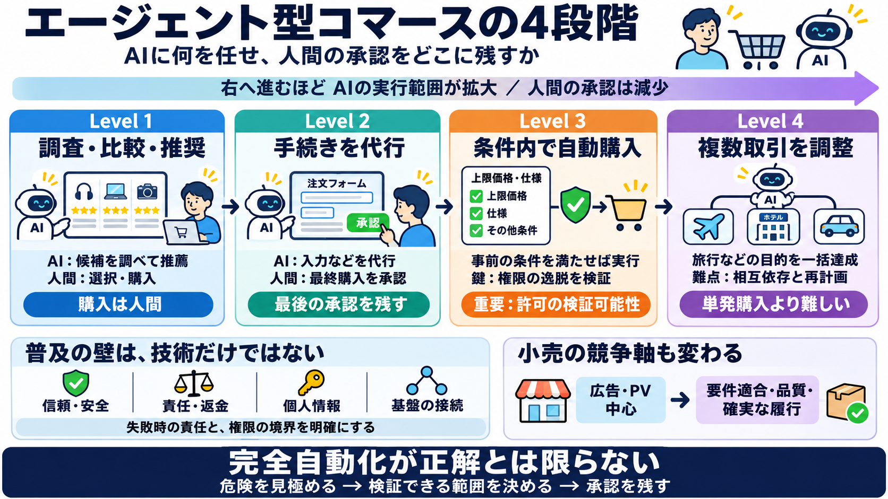

Agentic Commerce: ChatGPT Wallet vs Google Universal Cart | Dhawal Shah
| OpenAI | | | --- | Newest buying feature | ChatGPT Wallet (Nov 2026) | Universal Cart (Oct 2026) | | Who pays | The …

AIエージェント型コマースは、調査だけでなく条件に応じて購入まで進める仕組み。この記事の要点は「人間の関与をどこまで設計するか（Level 1〜4）」です。
従来のECは検索・比較・カート投入・決済が人間主導でした。これからはAIが意思決定の一部を担い、購入フロー全体の負担が変わります。
Level 1〜4は「AIに渡す権限（permission）」の増え方を整理したモデルです。委任が進むほど、信頼・安全・責任の設計が難しくなります。
Level 1は推薦中心、Level 2は手続きの一部も代行、Level 3は条件達成で独立購入、Level 4は複数取引の相互調整まで扱います。
Level 1では、AIが商品を調査し候補を比較して推奨します。購入の実行は必ずユーザーが行います。
Level 2は推薦に加えて購入手続きの一部を代行しますが、最終的な購入判断はユーザーが承認します。
Level 3は価格上限・色・サイズ・送料込みなどの条件を事前に指定し、条件を満たしたときにAIが独立して購入します。
Level 4は旅行の手配のように複数の取引を相互に調整し、最終目的を達成します。相互依存が大きく、単発自動購入より難しいため普及が遅いとされています。
普及を妨げるのは技術だけではありません。誤購入、返金・紛争処理、信頼、個人情報の取り扱い、そしてインフラの断片化が障害になりやすいとされます。
ユーザーが小売サイトへ直接行かなくなる可能性があり、従来の集客（広告・PV）型の競争は弱まります。代わりに、エージェントが選びたくなる価値が重要になります。
委任は「完全自動化に近づくほど良い」とは限りません。重要度に応じて段階を行き来する運用が現実的だ、というトーンで締めています。
エージェント型コマースはLevel 1〜4で「委任の設計」を可視化する枠組みです。普及速度は技術より、信頼・責任・紛争処理・プロトコル標準化（例：mandate）とインフラ接続に左右されます。
| OpenAI | | | --- | Newest buying feature | ChatGPT Wallet (Nov 2026) | Universal Cart (Oct 2026) | | Who pays | The …
この体験の中核にあるのは Agentic Commerce Protocol（新しいウィンドウで開く） であり、AI エージェントと企業が連携してユーザの製品購入を実現するための言語を提供します。 Agentic Commerce Pr…
The pace of innovation in retail is incredible, and agentic commerce — where AI completes tasks on people’s behalf — is …
雖暫未開通直接支付功能，但點擊商品卡片即可跳轉至原平台完成交易。業者預測，OpenAI 很可能在未來推出自有支付系統，複製抖音「商城 + 付款」的商業循環模式。 這場技術革新正引發骨牌效應，電商平台面臨流量劫持，淘寶曾為擺脫百度導流而自建…
鉅亨網 # ChatGPT引發青少年自殺爭議！OpenAI推安全修正計畫 鉅亨網編譯莊閔棻 OpenAI 近日針對 ChatGPT 在處理「敏感情況」時可能出現的問題，提出安全改進計畫。此前，有家庭指控該人工智慧聊天機器人導致其十六的…